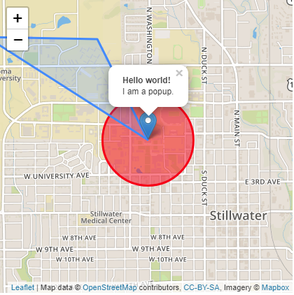
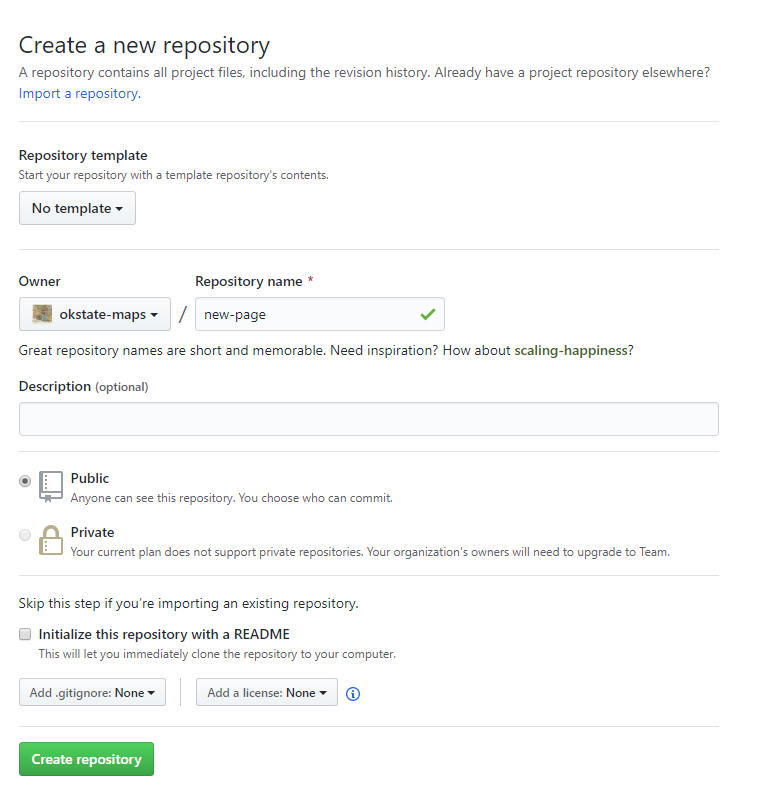
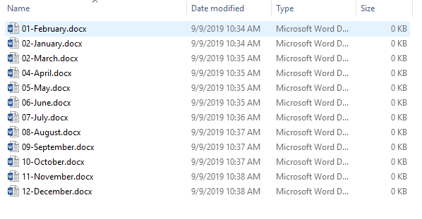

OSU Maps and Spatial Data Services Guides
OSU
Table of Contents
- Georeferencing in ArcGIS Pro
- Publishing Georeferenced Maps
- Digitizing in ArcGIS Pro
- Editing in ArcGIS Pro
- Using Arcscan
- Creating a Mosaic Dataset
- Storymap Tour
- Storymap Cascade
- Storymap Journal
- Storymap JS
- Creating a Website with HTML and CSS
- Leaflet Interactive Maps
- Hosting a Website on GitHub Pages
- Using Python to Rename Files
Georeferencing in ArcGIS Pro
Georeferencing is the process of adding geographic information to a raster image. This allows mapping software to place the image in its real-world location. This guide explains how to assign geographic coordinates to the raster's pixels.

Publishing Georeferenced Maps
ArcGIS Pro allows completed projects to be published online or shared with others. ArcGIS Online is a common publishing platform. While this guide explicitly states the steps needed to publish a georeferenced map, the same steps can be taken to publish other projects.

Digitizing in ArcGIS Pro
ArcGIS Pro allows raster data to be converted into vector digital data. This can be done manually or automatically, although manual digitization tends to allow for more accuracy. This is a step-by-step guide through the digitization process.

Editing in ArcGIS Pro
ArcGIS Pro enables users to edit existing vector data. The three most common editing tools are auto-complete polygon, merge and split. In this guide, you will learn how to utilize these tools for your own projects.

Using Arcscan
ArcScan allows images to be turned into vector-based feature layers through the process of vectorization. Currently, ArcMap is the only esri platform that supports Arcscan. This guide will walk you through the steps needed to start using Arcscan.

Creating a Mosaic Dataset
Mosaic datasets allow users to work with large collections of raster data. These datasets can be created in ArcGIS Pro to make data management simple. In this guide, you will learn how to create and work with mosaic datasets.

Story Map Tour
Story Maps are a relatively new and unique way of telling stories through the use of maps, images and videos. Esri offers many different Story Map templates that can be utilized for a multitude of projects and purposes. Story Map Tour allows you to link photos and videos with an interactive map. The most popular use for this kind of story map is to create guided walking tours for readers. Our guide will teach you how to do this.

Story Map Cascade
Story Map Cascade allows you to create a full screen, engaging scrolling experience. Using this option allows you to add narrative, images, videos and much more. Sections can be separated by immersive sections with animations and stylish transitions. In this guide, you will learn how to create a Story Map Cascade

Story Map Journal
Story Map Journal allows users to create an in-depth journal narrative that is organized into separate sections. This allows readers to scroll through the different sections of text and see the relavent content, such as maps, images, videos, etc. Our guide will take through each step needed to create your own Story Map Journal.

Story Map JS
Knight Lab offers a variety of tools, including a StoryMap creator. This is a great alternative for those who do not have access to an esri account. This guide for StoryMap JS is easy to use and extremely convenient.

Creating a Website with HTML and CSS
HTML and CSS are two intuitive languages that make building and styling a website easy. By using this guide, you will learn how to develop your very own, personalized website.

Leaflet Interactive Maps
Leaflet is one of the top sources for mobile-friendly interactive maps. It is simple to use and works well across all major desktop and mobile platforms. Leaflet is a great tool for incorporating easy-to-use interactive maps into your website. This guide will teach you how to incorporate an interactive Leaflet map into your website.
Hosting a Website on GitHub Pages
Hosting a website on GitHub Pages is so simple! This guide makes it even easier by walking you through the process step by step.
Using Python to Rename Files
Python can be used to complete a multitude of simple or complex tasks. In this guide, you will learn how to use Python to rename files within a folder.
